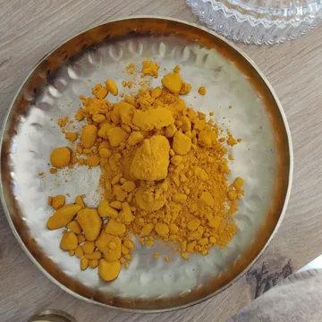

Тест на дошу:




Ваша доша:
Discover Your Dosha
Прежде чем выбирать питание, уход или практики, важно понять главное: какая энергия преобладает именно в вас.
В философии Ayurveda существует три типа конституции — доши. Они влияют на всё: от состояния кожи и уровня энергии до того, как вы реагируете на стресс, отдыхаете и восстанавливаетесь.
Vata Dosha · Pitta Dosha · Kapha Dosha
Вопрос 01 / 11
выберите то, что ближе всего к вам